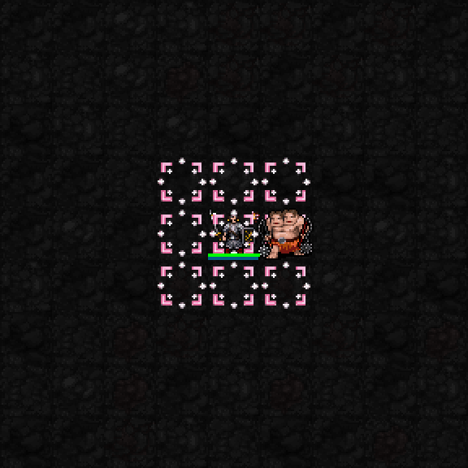
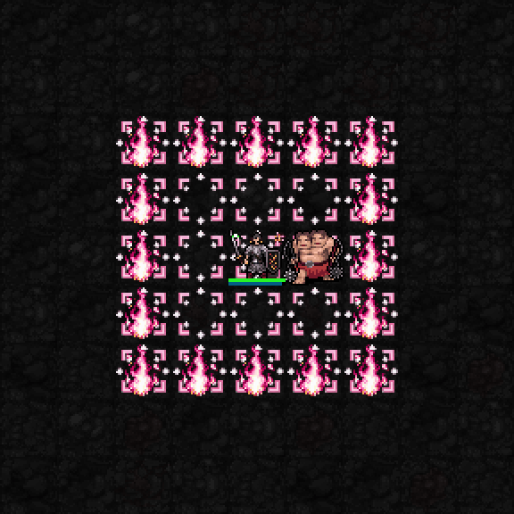
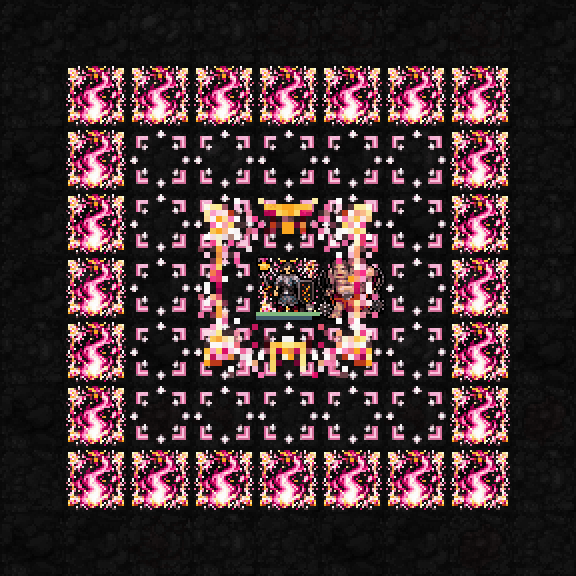
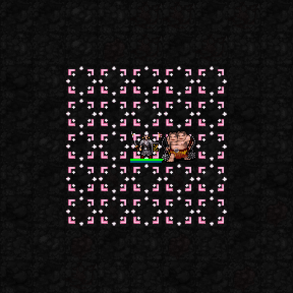
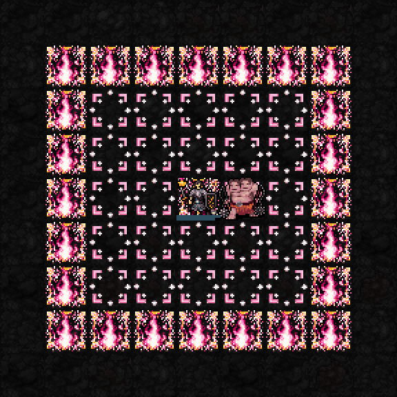

실제 SDL 테스트 전투장 캡처를 확대·느리게 반복했습니다. 효과를 덧그리지 않았습니다. 고정 장비와 높은 자원을 사용하며 일반 던전 플레이 영상은 아닙니다. 전투 수치·범위·비용은 유지했습니다.
기존 효과 유지. 처음 해금할 때 3×3, 신앙75 이상에서는 5×5 성역.

성역의 실제 테두리 칸에 분홍·금색 액막이 불꽃이 올라옵니다. 불꽃 지속시간이 끝나면 사라집니다. 성역 내부는 타오르지 않습니다.

중앙에서 분홍·금색 신사 결계가 3×3→5×5→7×7로 펼쳐집니다. 전개는 장식 연출이며 공격이 아닙니다. 신역이 유지되는 동안 외곽과 중앙은 금빛 표식으로 구분됩니다. 3성 불꽃이 남아 있으면 확장된 테두리로 함께 이동합니다.


